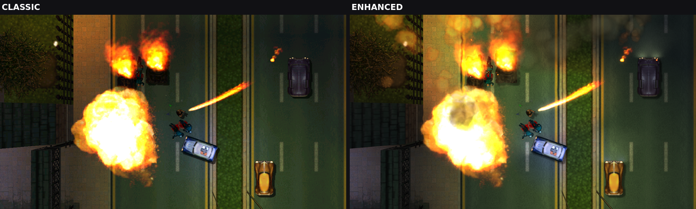

Graphics
GRAPHICS > PRESET switches between CLASSIC and ENHANCED: true colour, per-pixel lighting, car headlights, light from gunfire, explosions and fires, fire effects (heat haze, smoke and embers), ambient occlusion, soft shadows, bloom, anti-aliasing.
